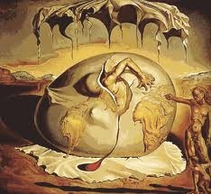

Que es Literatura contemporanea?
Más cerca de lo humano.
Los géneros que sobresalen son la novela policiaca y la novela histórica es aquella producida a finales de los años setenta, después del fenómeno del boom, como reaccióna las técnicas narrativas de excesiva elaboración y fragmentación espacio-temporal. Enesta, los modos de representación de la realidad y la imagen del mundo, así como laexistencia del hombre, son abordados a través de formas narrativas sencillas que retoman la tradición romántica del siglo XIX, pero con temas y escenarios de finales del siglo XX Los géneros que sobresalen son la novela policiaca y la novela histórica.

En la literatura contemporánea o movimiento contemporáneo conviven manifestaciones de las influencias precedentes y los nuevos contextos en los que se expande. Sus obras nacen como respuesta a las nuevas condiciones de vida, la necesidad de la comunicación, el crecimiento de la población y las crisis económicas. Se la distingue por el contenido históricamente posmoderno. Y este se relaciona con la época de las computadoras, la robótica, los teléfonos móviles, la globalización. Los escritores se expresan a través de una literatura que recrea el carácter de ficción, fantasía o misterio, basado en los hechos de la vida real. Por otro lado, las innovaciones tecnológicas e industriales fomentan las publicaciones de las obras a gran escala.
Referencias
- https://enciclopediadelenguayliteratura.com/literatura-contemporanea/
- Avanza Noveno 9